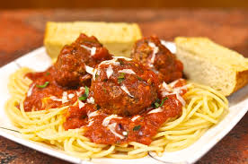

Navigate to Homepage
Spaghetti and Meatballs

Spaghetti and Meatballs
Spaghetti and meatballs is a classic Italian-American comfort food, featuring long strands of pasta topped with a rich tomato sauce and savory, seasoned meatballs. Despite its widespread association with Italy, this hearty dish was actually developed by Italian immigrants in the United States, who adapted their traditional recipes to include more affordable and abundant meat available in America.
Ingredients
- Spaghetti (or your preferred pasta)
- Ground meat (commonly a mix of ground beef, pork, and/or veal)
- Eggs
- Breadcrumbs (plain or Italian-style)
- Parmesan cheese (freshly grated is best)
- Garlic
- Onion
- Canned crushed tomatoes (or whole peeled tomatoes)
- Tomato paste
- Fresh herbs (such as basil and parsley)
- Dried herbs (such as oregano, Italian seasoning)
- Salt
- Black pepper
- Olive oil
- Red pepper flakes (optional, for a little heat)
- Sugar (optional, to balance acidity in the sauce)
- Milk (optional, for tender meatballs)
Instructions
- Prepare the Meatballs: In a large bowl, combine the ground meat (beef, pork, veal, or a mix), eggs, breadcrumbs, grated Parmesan cheese, minced garlic, finely chopped onion, fresh parsley, salt, pepper, and any other desired seasonings (like dried oregano or red pepper flakes). Mix gently until just combined, then form the mixture into golf-ball sized meatballs.
- Cook the Meatballs:Heat olive oil in a large skillet or Dutch oven over medium-high heat. Brown the meatballs on all sides in batches, being careful not to overcrowd the pan. They don't need to be cooked through, just browned for flavor and to help them hold their shape. Remove the browned meatballs and set them aside.
- Start the Sauce: In the same skillet or Dutch oven (add more olive oil if needed), sauté any remaining finely chopped onion and garlic until fragrant and softened. Stir in the tomato paste and cook for 1-2 minutes until it darkens slightly. Pour in the crushed tomatoes (and whole peeled tomatoes if using, breaking them up with a spoon), add any dried herbs (like oregano or Italian seasoning), and a pinch of sugar (if using). Season with salt and pepper to taste.
- Simmer the Sauce with Meatballs: Gently place the browned meatballs into the simmering tomato sauce. Bring the sauce to a gentle simmer, then reduce heat to low, cover, and let it cook for at least 30 minutes to an hour (or longer for deeper flavor). The meatballs will finish cooking in the sauce and absorb its flavors. Stir occasionally to prevent sticking.
- Cook the Spaghetti: While the sauce is simmering, bring a large pot of generously salted water to a rolling boil. Add the spaghetti and cook according to package directions until al dente (cooked through but still firm to the bite). Before draining, reserve about 1/2 to 1 cup of the pasta cooking water. Drain the spaghetti thoroughly.
- Combine and Serve: You can either add the drained spaghetti directly to the pot with the sauce and meatballs, tossing to coat, or serve portions of spaghetti topped with sauce and meatballs individually. If the sauce is too thick, add a little of the reserved pasta water to thin it to your desired consistency. Garnish with fresh basil, fresh parsley, and extra grated Parmesan cheese before serving.